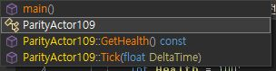
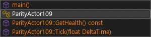
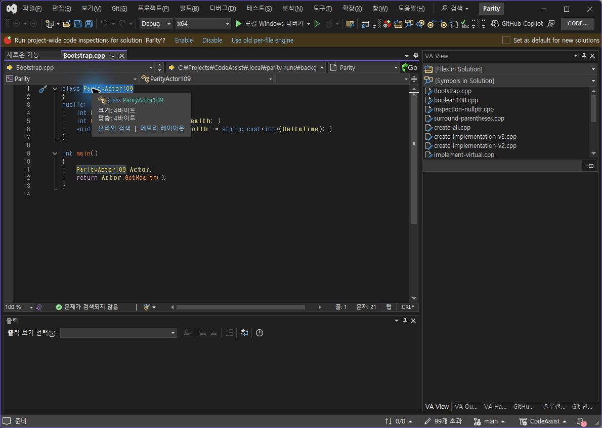
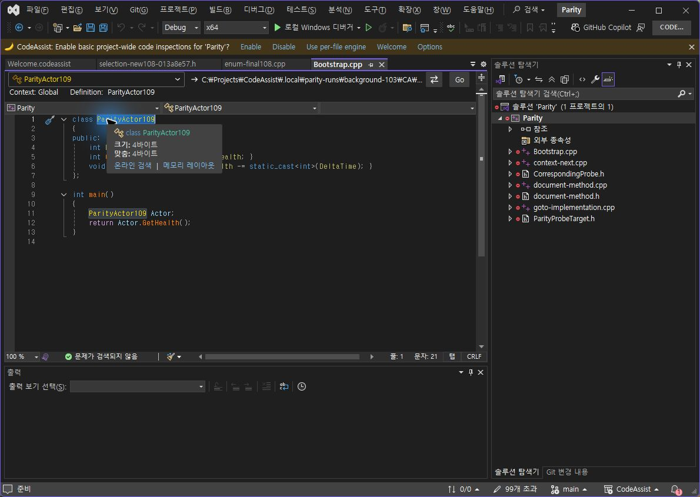

Tracefolio REPORTS & ISSUES
Tracefolio REPORTS & ISSUES0.0.104 팝업 강조·동일 항목 재선택
기존 기록 이전원문에 기록된 작업 내용과 당시 검증 범위를 정리한 보관 기록입니다.
0.0.104 팝업 선택 상태·재선택 대조
0.0.104 팝업 강조·동일 항목 재선택
CA 검사 프로필 0.0.104 설치: 6/6 바이너리 일치. VS2019·Modern 빌드와 패키지 검증 통과.
VA / 수정 전 CA102 / 현재 CA104



확인한 시각 요소 2/2(100%): 이전 선택 행의 회색 채움 제거, 현재 강조 행의 테마 전경색 적용. 전체 UI 유사도가 아닙니다. 일반 함수 글자색(CA 주황 / VA 금색)은 여전히 다르며 라이트 IDE에서의 실제 대조도 남았습니다.
동일 항목 Enter 재확정
양쪽 클래스 이름 내부 클릭 → Alt+M → Enter. VA와 CA104 모두 ParityActor109 선택, anchor 1:7 / active 1:21. 시나리오 일치 1/1(100%). CA103의 빈 선택 1:9 결과는 실패 기록으로 보존했습니다.


정확한 실행 결과·촬영 해시 · VA 선택 · CA104 선택 · CA103 실패 · 설치 검증 · 빌드
전체 목표는 진행 중
이번 CA102 실행에서는 GetHealth·Tick·main·class 4/4 대상의 위치·선택 문자열이 일치했습니다. 각 원본과 실행 근거를 참조하십시오. CA102의 4/4를 CA104의 새 실행으로 계산하지 않습니다.
남은 항목: 일반 행의 색상 정책, 라이트 테마 실행 대조, 누락 옵션·아래쪽 레이아웃, 전체 108개 기능의 현재 버전 실제 대조. 문서 부분 명세 확보율 108/108(100%)는 전체 역분석 완료율과 다릅니다.
제안 시간 10~15분. 추가 결함 수정·설치로 상한 초과. XERJ: 사용 — 메서드 색상·설정 후보 검색 후 현재 소스·실행 화면 확인.
원문과 편집 이력
- 원문 SHA-256:
e51ccb5841ffe505c49342fd2bbc3eb9953ac9805e6a87d64776ed2518ea7c7a - 표시 날짜는 원본 파일의 수정 시각입니다. 작업 완료 시각은 원문에 있는 값을 기준으로 확인합니다.